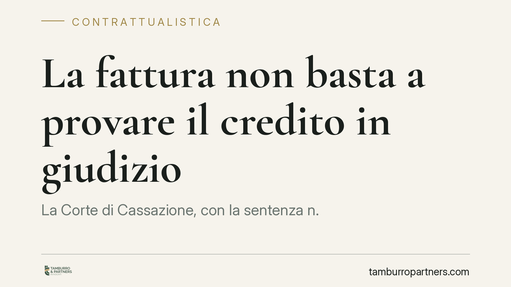

La fattura non basta a provare il credito in giudizio
La Corte di Cassazione, con la sentenza n. 2758/2026, torna su un tema cruciale per imprese e professionisti: la fattura, da sola, non dimostra l'esistenza del credito quando il debitore si oppone al decreto ingiuntivo. L'onere di provare l'avvenuta prestazione resta sul creditore. Una decisione che impone attenzione alla documentazione dei rapporti commerciali.

Il principio affermato
La fattura è un atto unilaterale: la forma, la emette e la invia chi vanta il credito. Proprio per questo, secondo la Cassazione, non può costituire di per sé la prova del diritto che il creditore afferma di avere.
Nel caso esaminato, un fornitore (nella specie un floricultore) aveva ottenuto un decreto ingiuntivo basandosi sulle proprie fatture. Il debitore si è opposto, contestando di dover pagare. La Corte ha chiarito che, aperto il giudizio di opposizione, spetta al creditore dimostrare di aver effettivamente eseguito la prestazione o consegnato la merce.
Inquadramento normativo
Il cuore della decisione è l'art. 2697 cod. civ., che pone l'onere della prova a carico di chi fa valere un diritto in giudizio. Chi agisce per ottenere un pagamento deve provare i fatti che fondano la propria pretesa; non basta allegare un documento che ha formato da sé.
Nel procedimento monitorio (gli artt. 633 e seguenti cod. proc. civ.), la fattura è prova sufficiente per ottenere il decreto ingiuntivo. Ma con l'opposizione (art. 645 cod. proc. civ.) il quadro cambia radicalmente: si apre un ordinario giudizio di cognizione in cui le parti invertono di fatto i ruoli processuali, e il creditore-opposto diventa attore sostanziale. Deve quindi fornire la prova piena del credito.
La Corte interviene anche sul principio di non contestazione dell'art. 115 cod. proc. civ.. Secondo questa regola, i fatti non specificamente contestati dalla parte costituita si considerano provati. Ma la Cassazione precisa un limite importante: l'ammissione generica di un rapporto commerciale tra le parti non equivale ad ammettere le singole forniture. In altre parole, riconoscere di aver avuto rapporti con un fornitore non significa riconoscere di aver ricevuto quella specifica merce indicata in quella specifica fattura.
Implicazioni pratiche
Per chi vende beni o eroga servizi, la conseguenza è concreta: emettere fattura e registrarla non equivale a potersi garantire il pagamento in caso di contenzioso.
Se il cliente paga spontaneamente, nessun problema. Ma se contesta e si oppone al decreto ingiuntivo, il creditore deve essere in grado di ricostruire l'intera operazione: l'accordo, l'ordine, la consegna, l'accettazione della merce o l'esecuzione del servizio.
Molte imprese, soprattutto quelle che lavorano su rapporti consolidati e informali, trascurano la tracciabilità. Si fida sulla parola, si consegna senza documento di trasporto firmato, si eroga il servizio senza verbale di accettazione. Questi rapporti "di fiducia" diventano fragili quando finiscono in tribunale.
Il principio vale in modo speculare per il debitore. Chi riceve un decreto ingiuntivo fondato solo su fatture ha uno spazio difensivo reale: può opporsi e costringere la controparte a dimostrare l'effettiva prestazione. Attenzione, però, a come si imposta l'opposizione: una contestazione troppo generica rischia di non essere efficace, perché anche la difesa deve essere specifica.
Cosa fare in concreto
- Documentate ogni fase del rapporto: ordine, conferma, documento di trasporto firmato per la consegna, verbale di accettazione o di collaudo per i servizi. La fattura è l'ultimo tassello, non la prova completa.
- Conservate la corrispondenza commerciale: email, messaggi e scambi che confermano l'ordine e la ricezione hanno valore probatorio e vanno archiviati in modo ordinato.
- Se dovete recuperare un credito contestato, non limitatevi al decreto ingiuntivo: preparate fin da subito il fascicolo probatorio utile a resistere a una eventuale opposizione.
- Se ricevete un decreto ingiuntivo che vi sembra fondato solo su fatture, valutate l'opposizione contestando in modo specifico le singole forniture che non avete ricevuto o che non corrispondono.
- Rivedete i modelli contrattuali e le procedure interne di consegna e accettazione, così che la prova del credito sia già costruita prima di un eventuale contenzioso.
La pronuncia non introduce una regola nuova, ma consolida un orientamento che conviene conoscere. La tutela del credito si gioca molto prima del tribunale: nella qualità della documentazione che si produce ogni giorno.
*Contributo informativo a cura di Tamburro & Partners - Avv. Giuseppe Tamburro. Non costituisce parere legale.*
Ogni contratto ha il suo equilibrio.
Se vuoi una revisione delle clausole o una redazione su misura, scrivi allo studio. Ti rispondiamo entro un giorno lavorativo.